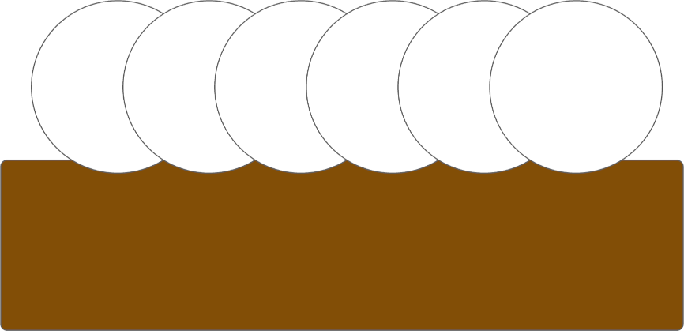
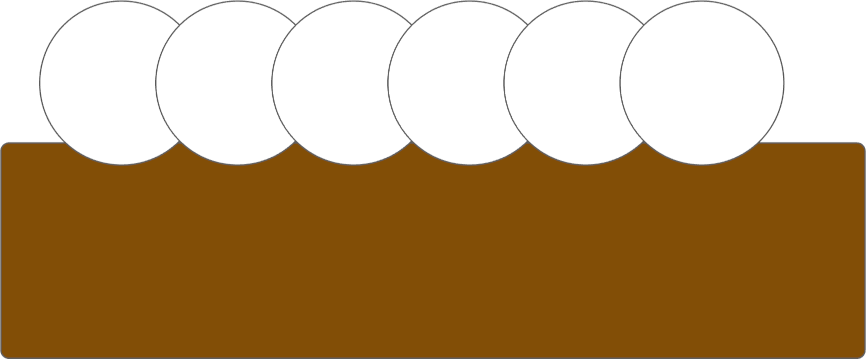
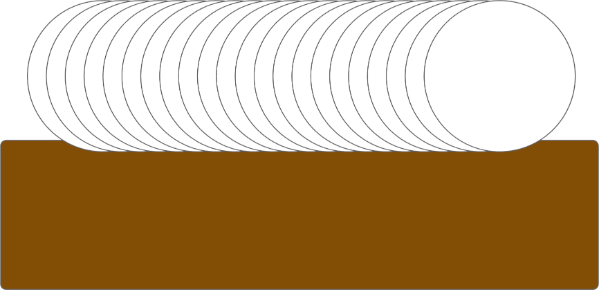

|
|
ELFOS |
|
| Synchronization Screen |
The setting for Revolutions has an affect on the evenness of the surface, but it is also affected by the diameter of cutter's rotation. The helical ridges shown on the left below are prominent, and even more so when the cutter's diameter is smaller, as shown on the right.
|  |  |
|
2" Cutter Diameter
Rough Cutting Passes |
1 1/2" Cutter Diameter
Rough Cutting Passes |
As the number of revolutions is increased, the size of the helical ridges continues to decrease.
|  | |
|
2" Cutter Diameter
Smooth Cutting Passes |
With a 2" diameter cutter, I have found a good value for Revolutions is a factor of the Distance:
| Purpose | Revolutions/Inch |
|---|---|
| Roughing Cuts | 10 |
| Final pass | 25 to 30 |
For example, if the Distance is for the cutter's movement is 2.5", then the roughting cuts would use a setting for Revolutions 25. And on the final pass, the setting for Revolutions would be 65 to 75. This takes quite a while to make the cut, but the surface is quite smooth!
|
Questions or comments? Contact us at
ColvinTools@Gmail.com |
Disclaimers |
{kind=link}
{kind=link}
{kind=link}